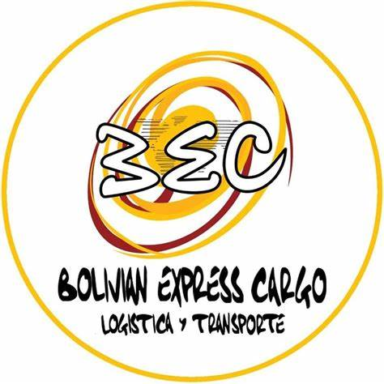
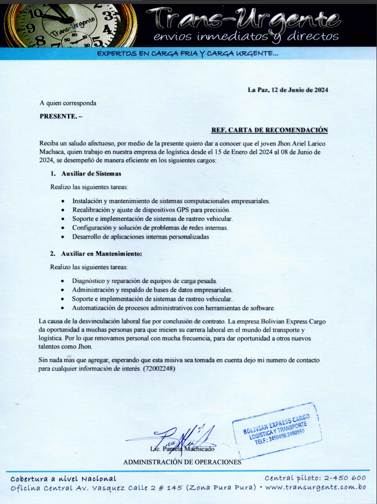
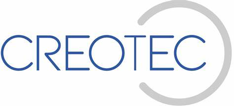
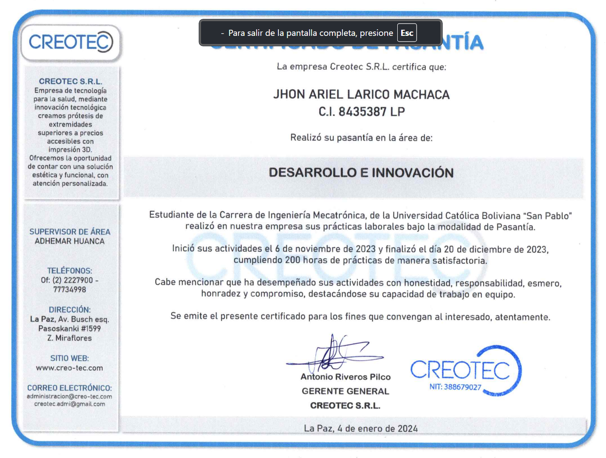

Auxiliar de Sistemas
Empresa: Bolivian Express Cargo
Referencias:
Lic. Pamela Machicado - Jefe de Administración de Operaciones
Teléfono: +591 72002248
Dirección: Av. Vásquez Calle 2 #145

Tareas Realizadas:
Recalibración de dispositivos GPS
Soporte y montaje de equipos de cómputo
Diseño y soporte de aplicaciones móviles
Diseño y soporte de páginas web
Soporte a sistemas de rastreo
Mantenimiento de equipos de carga pesada
Creación y administración de bases de datos
Automatización de Procesos
Certificado de Trabajo:
Pasante en Diseño e Innovacion
Empresa: Creotec
Referencias:
Ing. Antonio Riveros Pilco - Gerente General
Teléfono: +591 77734998
Av. Bush esq. Pasoskanki #1599

Tareas Realizadas:
Diseño de protesis en SolidWork
Innovacion y creacion de nuevos mecanismos de movimiento
Supervicion en procesos de imporesion 3D
Encargado de Post-procesado de protesis
Mantenimiento de impresoras 3D
Elaboracion de documentos tecnicos de las protesis
Automatización de Procesos
Certificado de Trabajo:

×